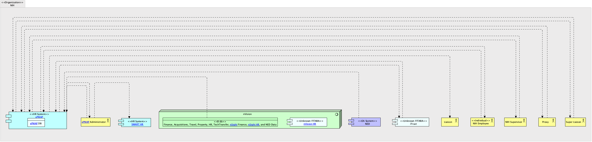

|
|
|
 ArchiMate Diagram - ePMAP ArchiMate Diagram
ArchiMate Diagram - ePMAP ArchiMate Diagram
 link
link
| Jump to: |
|  |
| Model Elements |
| Name | Description | ||
|
|
Connections to database is provided by TNS connection rows a user is allowed to see is limited by VPD by there institute.
Contains:
HR data - Pay Biweekly, Demographics daily, Commission COR pay and FELLOWS is monthly
Finance data - is daily accept for commitments and obligation which is once an hour.
Travel - nightly
Property - nightly
Grants - nightly
NED - daily
Tech transfer - ?
Acquisitions - nightly.
FPS - is months
NOTES : Source data from POTS and AMBIS (acquisitions related). NBS only gets financial's from pots. Approvals, and specifics(vendors quantity) are gotten directly from POTS.
AMBIS only used by MIAID NBS gets just enugh for a requisitions |
||
|
|
nVision HR – Consolidated and integrated HR reporting. Facilitates data driven decision making. Create and share customized reports for FTE and non-FTE staff including personnel costs, FTE usage, aggregated workforce demographics, status of personnel actions, fellowship costs and status. NED tracking history movement within directory system from org to org. Provides Complete staff picture for each IC, develop custom reports, track all staff(contractors, FTEs Fellows), export to PDF, ability to create planning records to project future needs, dashboards and alerts.
Sources
|
||
|
|
https://nvision.nih.gov/nvision_registration/registration_guide.html#IntroductiontonVision
Contains
HR Data
nVision to K2 Process Script nVision data can be received by K2 by means of a K2 Process Script. |
||
|
|
The
HHS
Performance Management Appraisal Program
(PMAP) runs on a calendar year cycle and is applicable to all General
Schedule (GS), Wage Grade (WG, WL, WS), Senior Biomedical Research
Service (SBRS), and Title 42 209(f) and Title-42 209(g) employees who
are not covered under the HHS
Executive Performance Management System (EPMS) - which runs on a fiscal
year. |
||
|
|
The NIH Enterprise Directory (NED) - is a centrally coordinated, electronic directory containing identity, contact, and organizational information for all members of the NIH workforce and non-NIH staff using NIH services and facilities. NEDWeb is the custom data content and process management application used by NIH administrative personnel for adding new people to NED, updating existing records, transferring people between ICs, and deactivating people when they leave NIH. NEDWeb is also used for authorizing NIH "services" such as ID badges, Library privileges, Active Directory accounts, Exchange mailboxes, VPN Remote access, parking permits, and listing in the NIH Telephone and Services Directory. NEDWeb provides the following features and capabilities:
This document provides detailed information on the use of NEDWeb and is intended to serve as a reference guide for system users. Please direct comments or suggestions to ned@mail.nih.gov.
System link - https://nedportal.nih.gov/ProcessPortal/dashboards/NED/PIV+NED+Welcome+CS/NED_03_10_2017?isScoreboard=false
|
||
|
|
SMARTHR – increases efficiency in the use of NIH resources and automates specialized reporting tasks performed by OHR. SMARTHR also provides the unique ability to bridge reporting gaps across multiple Human Resource (HR) and non-HR systems. By linking disparate data-sources, SMARTHR promotes a more complete assessment of the organization and human capital topics, while facilitating on-demand business intelligence to OHR and IC customers alike. managed by OHR HR Systems Support Helpdesk
Sources
|
||
|
|
|||